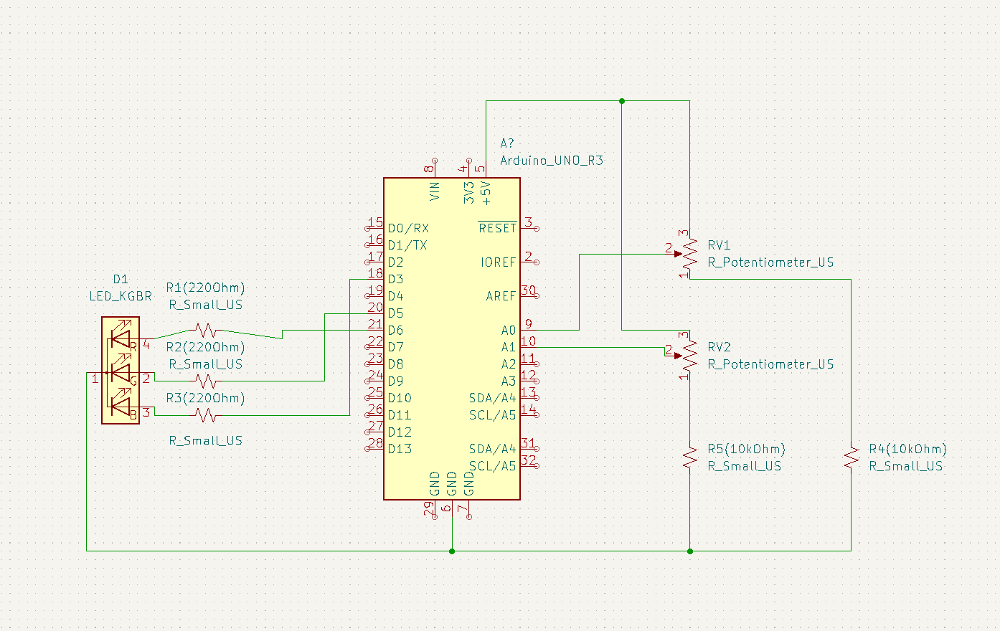
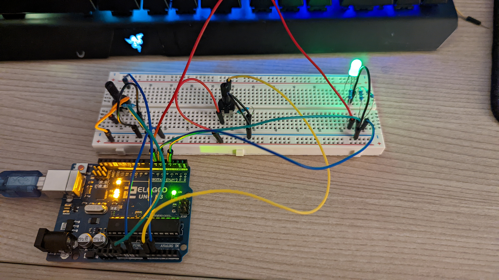

Schematic for my circuit!

The circuit was powered using a USB connected to my motherboard. I used an RGB LED with 3 220 Ohm resistors
and two potentiometers both with 10k Ohm resistors in my circuit. Analog signals were sent from my arduino to
the cavas where I was able to convert them to coordinates. A signal can also be recieved and it changes the color
of the RGB LED.
Firmware running the site and the RGB LED!
I programmed my arduino to use two potentiometers to emulate and online version of an etch-a-sketch. One knob used changed the x
coordinates while the other changed the y coordinates. There is also a "CLEAR" button which the user can press to clear any drawings
currently on the canvas. Lastly, if the user ends up reaching the edge of the canvas with the knobs, the RGB LED will go from green
to red, signifying that the user must change direction in order to keep drawing. The LED will stay red until the "pen" is moved away from the edge.
Final circuit result!



The first gif shows the scenario when the user reaches the edge of the canvas and the LED turns red to notify them.
The second gif shows the clearing function where users can press the "CLEAR" button and wipe the canvas for more drawings.